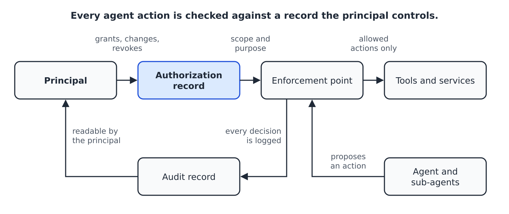

Preprint · Under review at IEEE Security & Privacy · November 2026
Consent as Infrastructure
Keeping AI agents tied to the people they act for
This work has been submitted to the IEEE for possible publication. Copyright may be transferred without notice, after which this version may no longer be accessible.
AbstractAuthorization should not end at the grant
AI agents act on delegated authority, yet authorization is granted once and checked against a fixed grant. Drawing on healthcare consent infrastructure, I argue that delegated authority must stay tied to the principal throughout execution: purpose enforced at runtime, scope changeable mid-task, and the audit record visible to the principal.
Healthcare learned, through decades of failure and regulation, to separate recording consent from enforcing it and to keep a record of what was done with patient data. The paper carries those lessons to AI agents, which take actions rather than only reading records, and asks what the agent authorization standards now being drafted at the IETF should require.
Three claimsWhat current specifications leave open
- Purpose is a runtime constraint, not an audit label.A task’s declared purpose should limit what the agent may do while it runs, checked at the enforcement point, with escalation to the principal where it cannot be decided deterministically.
- The principal can change scope mid-task.The person should be able to narrow, widen, or withdraw a class of actions while the agent runs. That differs from approving one held action at a time, and from automatic attenuation triggered by risk signals.
- The principal can read the record.An intelligible view of what the agent attempted, what was allowed or blocked, under which grant, and where the triggering instruction came from belongs to the person whose authority was used, not only to the operator.

The proposalSix requirements for a principal-controlled lifecycle
- Record delegation; never infer it.
- Enforce independently of the agent, so every consequential action passes one gate.
- Enforce purpose at runtime.
- Let the principal change scope during execution.
- Narrow and trace delegation chains across sub-agents.
- Make the record readable by the principal.
The paper works these through a travel-booking example, sets out a threat model and open design questions, and proposes four additions that current drafts (AIMS-01 in the IETF WIMSE working group and the AAE individual draft) could adopt without new cryptography or a new protocol. It also states its limits: it does not solve alignment, and it depends on complete mediation.